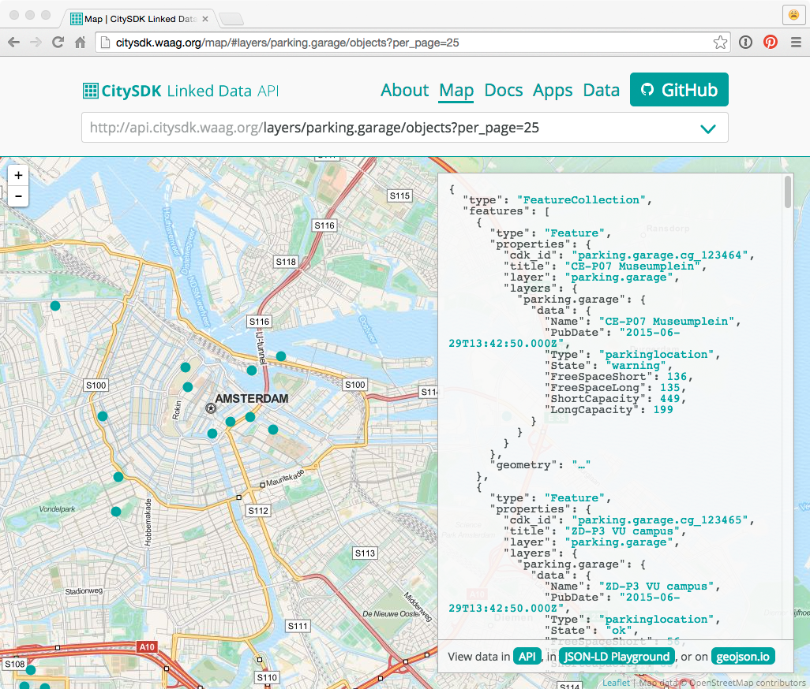
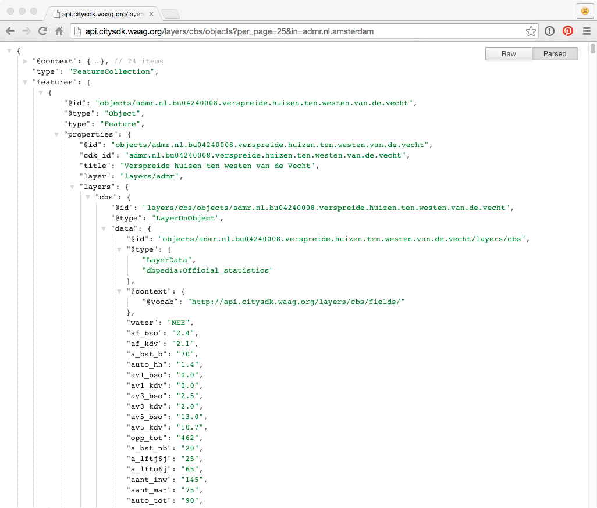
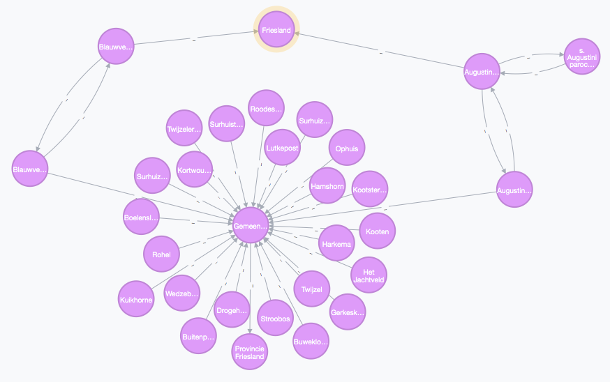

CitySDK + Future
Concepts, ideas, plans - in telegram style
CitySDK: three-year open data project, funded by European Union
8 cities, three domains: participation, mobility, tourism
Waag Society worked on the mobility domain
One API for a city's mobility data - public transport schedules, parking garages, traffic speed, etc.
Main concept: link data from different datasets/silos to objects that actually exist in a city

Silos

Parking Garage
Parking Garage
Objects can contain data on multiple layers
Parking Garage
Result: CitySDK LD API
LD = Linked Data
REST API, Ruby + PostGIS, GeoJSON + JSON-LD output
API
Extra: import modules for OpenStreetMap and GTFS
Current status: project ended December 2014
CitySDK LD API v1.0 is finished
We have many plans/ideas to improve API! (But, however, currently no time/money)
For example:
Difficult to update data, no easy interface for adding datasets, links between dataset can break on update
Importing datasets and keeping data up-to-date is costly
FUTURE PLANS:
Work with Amsterdam Institute for Advanded Metropolitan Solutions on Amsterdam's new open data platform
And we are currently working on two other open data projects:
1: Heritage & Location - connecting cultural heritage
Import and link data about (historical) place names from many different data sets
Graph
2: Transparant Nederland
Import and link data about people, companies, organizations and politics from many different data sets
Both projects share concepts with CitySDK LD API, but allow for easy importing and updating of data
Goals: combine CitySDK LD API & Histograph & Transparant Nederland
Create easy-to-use (for developers & data owners) open data platform, and dynamic links between data sets
That's it!